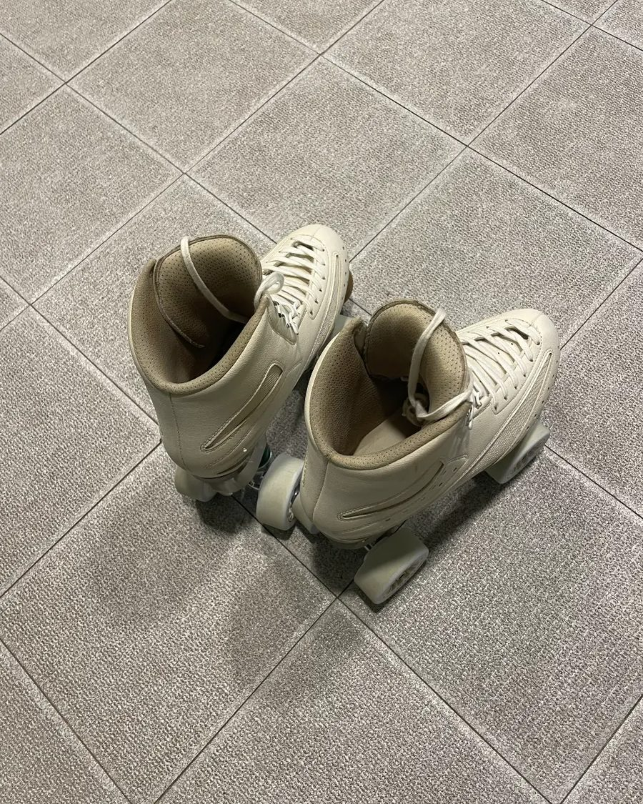

Natalia Rodríguez
Product designer (UX/UI)
Proyecto 2 / Dashboard 2025
Proyecto 4 / Próximamente 2026
Sobre mí
Trabajo como diseñadora de producto en Blanes, Gerona, con el objetivo de crear diseños que simplifiquen la vida de los usuarios, proporcionando soluciones creativas con un gran valor añadido.
Mi enfoque se basa en la colaboración activa: escuchar atentamente las diversas perspectivas y experiencias, e involucrar tanto al equipo como a los clientes para lograr los mejores resultados posibles.
Experiencia
-
Ene. 2024 — Hoy
Piper AI · an Aircall company
Product Designer (UX/UI)
Primera y única Product Designer del equipo: diseño de producto de principio a fin, con la investigación como base de cada decisión. Research de mercado y competencia, validación con clientes y usuarios, y colaboración diaria con frontend y backend.
- Piper AI (Autopilot Tech) es adquirida por Aircall en marzo de 2026.
- +3M€ en la primera ronda de inversión como startup.
-
Ene. 2023 — Ene. 2024
Antai Ventures · venture studio
Product Designer (UX/UI)
Diseño de nuevos negocios desde cero: research de modelos de negocio y competencia, definición de hipótesis, arquitectura de información, flujos y prototipos validados con user tests, junto a fundadores y desarrollo.
- Responsable del diseño en más de 15 proyectos del venture studio.
- Lanzamiento de 2 compañías nuevas en 2023.
-
Feb. 2023 — Mar. 2024
Nuclio Digital School
Mentora UX/UI
Acompañamiento a estudiantes en research, planteamiento de hipótesis y su traducción a interfaces y prototipos, con revisiones y feedback para prepararlos para el entorno profesional.
-
Mar. 2020 — Dic. 2022
Jardín y Natura S.L.
Diseñadora gráfica e ilustradora
Identidad visual, packaging, ilustraciones y materiales gráficos para distintas marcas, y diseño de webs y sistemas visuales con foco en la coherencia de marca y la experiencia de usuario.
- El rediseño web contribuyó a aumentar el tráfico un 40%, las páginas vistas un 60% y la duración media de sesión un 70%.
Formación
- 2022 — 2023 Máster en UX/UI Design Nuclio Digital School · Con minor en Full Stack for no-coders
- 2019 Posgrado en Diseño Gráfico y Packaging BAU, Centre Universitari d'Arts i Disseny
- 2016 — 2018 Grado Superior en Diseño y Gráfica Publicitaria ELISAVA - CIC
Cuando no estoy diseñando…

Encantada, soy Nat :)

Leo mucho y publico reseñas en @natbookish ↗

Mis hijos gatunos.

En 2025 colgué los patines, pero mi hobby era el patinaje artístico.
Acompañando a mis alumnos en la presentación de sus proyectos.
Contacto